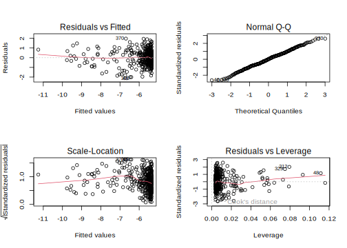
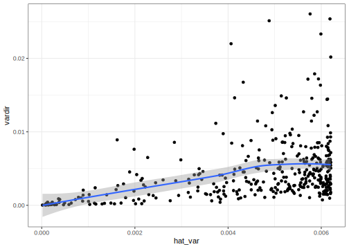

5.3 Modelo para la varianza
El código ajusta un modelo de regresión lineal múltiple (utilizando la función lm()), donde ln_sigma2 es la variable respuesta y las variables predictoras son pobreza, nd, y varias transformaciones de éstas. El objetivo de este modelo es estimar la función generalizada de varianza (FGV) para los dominios observados.
library(gtsummary)
FGV1 <- lm(ln_sigma2 ~ pobreza + I(nd^2) + I(sqrt(pobreza)),
data = baseFGV)
tbl_regression(FGV1) %>%
add_glance_table(include = c(r.squared, adj.r.squared))| Characteristic | Beta | 95% CI1 | p-value |
|---|---|---|---|
| pobreza | -12 | -14, -9.5 | <0.001 |
| I(nd^2) | 0.00 | 0.00, 0.00 | <0.001 |
| I(sqrt(pobreza)) | 16 | 14, 19 | <0.001 |
| R² | 0.608 | ||
| Adjusted R² | 0.604 | ||
| 1 CI = Confidence Interval | |||
Después de tener la estimación del modelo se debe obtener el valor de la constante \(\Delta\) para lo cual se usa el siguiente código.
delta.hat = sum(baseFGV$vardir) /
sum(exp(fitted.values(FGV1)))De donde se obtiene que \(\Delta = 1.303171\). Final es posible obtener la varianza suavizada ejecutando el siguiente comando.
hat.sigma <-
data.frame(dam2 = baseFGV$dam2,
hat_var = delta.hat * exp(fitted.values(FGV1)))
baseFGV <- left_join(baseFGV, hat.sigma)
tba(head(baseFGV, 10))| dam2 | pobreza | nd | vardir | ln_sigma2 | hat_var |
|---|---|---|---|---|---|
| 05001 | 0.1597 | 27432 | 0.0000 | -10.0123 | 0.0001 |
| 05002 | 0.4049 | 257 | 0.0032 | -5.7366 | 0.0060 |
| 05031 | 0.3817 | 199 | 0.0042 | -5.4635 | 0.0058 |
| 05034 | 0.4731 | 223 | 0.0018 | -6.3351 | 0.0062 |
| 05045 | 0.2876 | 480 | 0.0064 | -5.0451 | 0.0047 |
| 05079 | 0.4001 | 191 | 0.0063 | -5.0660 | 0.0060 |
| 05088 | 0.1314 | 4457 | 0.0002 | -8.5360 | 0.0016 |
| 05093 | 0.3273 | 168 | 0.0063 | -5.0724 | 0.0052 |
| 05120 | 0.7049 | 180 | 0.0061 | -5.0921 | 0.0048 |
| 05129 | 0.1140 | 554 | 0.0014 | -6.5515 | 0.0014 |
Validación del modelo para la FGV
par(mfrow = c(2, 2))
plot(FGV1)
Comparación entre la varianza estimada versus la pronosticada por la FGV
ggplot(baseFGV ,
aes(y = vardir, x = hat_var)) +
geom_point() +
geom_smooth(method = "loess") +
labs(x = "FGV", y = "VarDirEst") +
ylab("Varianza del Estimador Directo")
Predicción de la varianza suavizada
base_sae <- base_sae %>% left_join(hat.sigma, by = "dam2")El siguiente código utiliza la función mutate() del paquete dplyr para crear nuevas variables de la base de datos base_sae y luego guarda el resultado en un archivo RDS llamado base_FH_2018.rds.
En concreto, el código realiza las siguientes operaciones:
La variable
deff_dam2se ajusta a 1 cuando es NaN.La variable
deff_FGVse calcula a partir de otras dos variableshat_varyvardir.Sivardires 0, entoncesdeff_FGVse ajusta a 1. En caso contrario, se dividehat_varpor vardir / deff_dam2para obtenerdeff_FGV.La variable
deff_FGVse regulariza utilizando el criterio MDS: sideff_FGVes menor que 1, se ajusta a 1.Finalmente, se calcula la variable
n_eff_FGVdividiendond(el tamaño de la muestra) pordeff_FGV.
base_FH <- base_sae %>%
mutate(
deff_dam2 = ifelse(is.nan(deff_dam2), 1,
deff_dam2),
deff_FGV = ifelse(
vardir == 0 ,
1,
hat_var / (vardir / deff_dam2)
),
# Criterio MDS para regularizar el DeffFGV
deff_FGV = ifelse(deff_FGV < 1, 1, deff_FGV),
n_eff_FGV = nd / deff_FGV
)
saveRDS(object = base_FH, "Recursos/Día2/Sesion1/Data/base_FH_2018.rds")